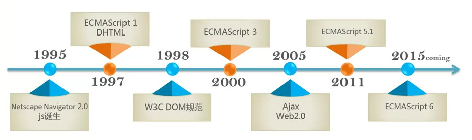
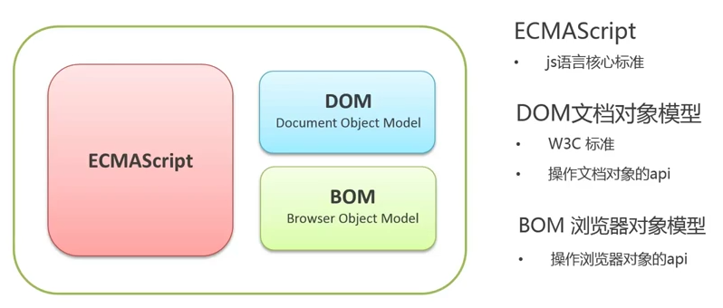

Table of Contents generated with DocToc
前端开发三要素，HTML（描述网页内容），CSS（描述样式），JavaScript（控制网页行为）。JavaScript 为解释型编程语言，运行环境也很广泛。


JavaScript的引入方法如下：
<!DOCTYPE html>
<html>
<head>
<title></title>
</head>
<body>
<!-- 以上代码忽略 -->
<!-- 需将 javascript 代码放置在 body 标签的最末端 -->
<!-- 外联文件 -->
<script src="/javascripts/application.js" type="text/javascript" charset="utf-8" async defer></script>
<!-- 内嵌代码 -->
<script>
console.log('>>> Hello, world!');
</script>
</body>
</html>